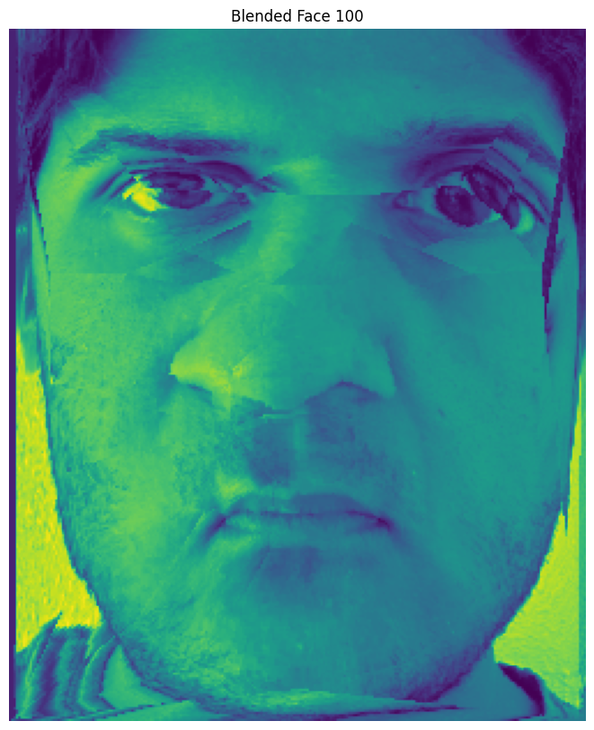

Project 3 was about creating a face morphing animation by warping the shape and blending the colors of two images. The process involved defining corresponding keypoints between two faces, generating a triangulation mesh, and performing an affine warp to compute intermediate frames.
Here, we defined pairs of corresponding points on the two images by hand. The original image is a headshot of me, and the destination image is a headshot of Leonardo DiCaprio.
Before computing the whole morph sequence, we computed the mid-way face of the two images.
Now, we have the morph sequence of going from the original image to the destination image over 45 frames.

We used similar techniques with triangulation to create the mean face of a population of faces. I also morphed a few specific source images to the mean shape. Finally, I morphed my own face to the average shape and morphed the average face into the shape of my face.

Here, we produced a caricature of my face by extrapolating from the population mean I calculated in the last step.
